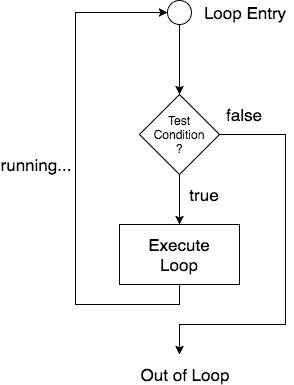
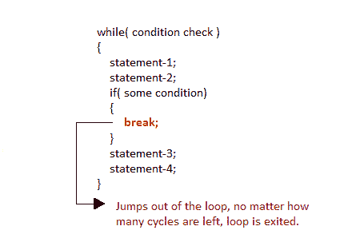
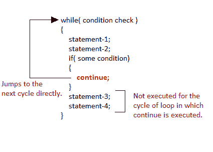

C 语言中的循环
在包括 C 语言在内的任何编程语言中，循环用于重复执行一组语句，直到满足特定条件。
它是如何工作的
下图描述了循环执行，

根据上图，如果测试条件为真，则执行循环，如果为假，则执行脱离循环。循环成功执行后，再次从循环条目开始执行，并再次检查测试条件，并继续重复。
要执行的语句序列被保存在花括号{ }中，花括号被称为循环体。每次执行循环体后，验证条件，如果发现为真，则再次执行循环体。当条件检查返回假时，不执行循环体，执行脱离循环。
循环的类型
C 语言中有 3 种类型的循环，即:
while循环for循环do while循环
while循环
while循环可以作为入口控制循环来处理。它分三步完成。
- 变量初始化。(例如
int x = 0;) - 条件(例如
while(x <= 10)) - 可变增量或减量(
x++或x--或x = x + 2
语法:
variable initialization;
while(condition)
{
statements;
variable increment or decrement;
}
示例:打印前 10 个自然数的程序
#include<stdio.h>
void main( )
{
int x;
x = 1;
while(x <= 10)
{
printf("%d\t", x);
/* below statement means, do x = x+1, increment x by 1*/
x++;
}
}
1 2 3 4 5 6 7 8 9 10
for循环
for循环用于重复执行一组语句，直到满足特定条件。我们可以说它是一个开环。。一般格式是，
for(initialization; condition; increment/decrement)
{
statement-block;
}
在for循环中，我们正好有两个分号，一个在初始化之后，第二个在条件之后。在这个循环中，我们可以有多个初始化或增量/减量，用逗号运算符分隔。但是它只能有一个条件。
for循环执行如下:
- 它首先评估初始化代码。
- 然后检查条件表达式。
- 如果为真，则执行 for 循环体。
- 然后，它评估增量/减量条件，并再次从步骤 2 开始。
- 当条件表达式变为假时，退出循环。
示例:打印前 10 个自然数的程序
#include<stdio.h>
void main( )
{
int x;
for(x = 1; x <= 10; x++)
{
printf("%d\t", x);
}
}
1 2 3 4 5 6 7 8 9 10
嵌套for循环
我们也可以有嵌套的for循环，即一个for循环在另一个for循环内。基本语法是，
for(initialization; condition; increment/decrement)
{
for(initialization; condition; increment/decrement)
{
statement ;
}
}
示例:打印半个数字金字塔的程序
#include<stdio.h>
void main( )
{
int i, j;
/* first for loop */
for(i = 1; i < 5; i++)
{
printf("\n");
/* second for loop inside the first */
for(j = i; j > 0; j--)
{
printf("%d", j);
}
}
}
1 21 321 4321 54321
do while循环
在某些情况下，有必要在测试条件之前执行循环体。这种情况可以借助do-while循环来处理。do语句首先评估循环体，最后使用while语句检查条件。这意味着循环体将至少执行一次，即使while内的起始条件被初始化为假。一般语法是，
do
{
.....
.....
}
while(condition)
示例:打印前 10 个 5 的倍数的程序。
#include<stdio.h>
void main()
{
int a, i;
a = 5;
i = 1;
do
{
printf("%d\t", a*i);
i++;
}
while(i <= 10);
}
5 10 15 20 25 30 35 40 45 50
跳出循环
有时，在执行循环时，一旦某个条件变为真，就需要跳过循环的一部分或离开循环。这就是所谓的跳出循环。
1)break语句
当在循环中遇到break语句时，循环立即退出，程序继续执行紧接着循环的语句。

2)继续语句
它使控件直接进入测试条件，然后继续循环过程。遇到continue时，光标离开当前循环，从下一个循环开始。
